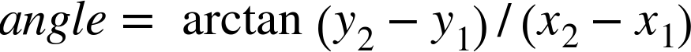

Example code and online extras for the O'Reilly Media book by Amelia Bellamy-Royds, Kurt Cagle, and Dudley Storey.
Faking Repeating Gradients
In the book we had multiple examples of using the spreadMethod attribute to create repeating and reflecting gradients, but with a warning: WebKit does not (yet) support them. All SVG gradients get the pad behavior in Safari and iOS browsers. So if you’re building SVG for the web, you’ll often need another approach.
But what happens if your already have an SVG that works in other browsers? How do you create the same effect in a cross-browser way?
For radial gradients, the only solution is to repeat the <stop> elements in your gradient as many times as are necessary to fill up the shape. As we warned in the book, for off-center radial gradients (which use the fx and fy to distort the radial pattern), you’ll never exactly recreate the original effect.
For linear gradients, however, there is another option: the <pattern> element.
The contents in a <pattern> can include shapes filled with gradients. Which means that the repeating columns (or rows) of pattern tiles can be used to replicate the repeats in a repeating linear gradient. Unlike real repeating SVG gradients, this version works on WebKit.
Turning a repeating gradient into a repeating pattern is fairly straightforward if the gradient is exactly horizontal or vertical. However, it gets a little more complicated if the gradient was on an angle. You’ll need to use some trigonometry to figure out the dimensions of your repeated sections, and then the patternTransform attribute to recreate the angle.
The process of converting a repeating linear gradient to a pattern is as follows:
Create a <pattern> that uses the same type of scaling units as the gradient, for both the pattern tile and the pattern contents. If the gradient had gradientUnits="userSpaceOnUse", then set patternUnits to match. If the gradient used objectBoundingBox (either explicitly or by default), then set patternContentUnits to match.
Give the <pattern> the id that you were using for the repeating linear gradient—that way, you don’t have to change any of your styles. Give the <linearGradient> a new id that helps remind you of its relationship to the <pattern>. For example:
Set the x and y attributes on the <pattern> to the values of x1 and y1 from the <linearGradient>. (If there aren’t x1 and y1 attributes, then you don’t need x and y attributes: the defaults are the same.)
Convert all geometric attributes (x1, y1, x2, and y2) on the gradient to the same units. If it’s a userSpaceOnUse gradient, convert percentages to absolute values based on the size of the SVG.
Remember that the default value for x2 is 100%; the defaults for the others are 0.
Figure out the length of the gradient vector from the x1, y1, x2, and y2 attributes, and use this for the width of the <pattern>. If it’s a pure horizontal or vertical gradient, this calculation is straightforward. Otherwise, use a formula based on Pythagoras’ theorem:
Copy any values from a gradientTransform attribute on the gradient into a patternTransform attribute on the <pattern>.
Figure out the angle of the gradient vector, in degrees. If it’s horizontal left-to-right gradient, that’s 0, and you can skip this step. Otherwise, use trigonometry on your calculator:

angle=arctan(y2−y1)/(x2−x1)
Or use JavaScript in your browser’s console:
angle=Math.atan2((y2-y1),(x2-x1))*(180/Math.PI)
Use the result to add a rotate(angle) transform at the end of the patternTransform attribute.
Remove all attributes except id from the <linearGradient> element, so it becomes a simple left-to-right, non-repeating, bounding-box gradient. All the angles and sizing and repeats and userSpaceOnUse scaling (if required) will be handled by the <pattern>.
Set the height of the <pattern> to any positive value (100% works). The pattern tiles will be repeated infinitely in the vertical direction anyway, so it doesn’t really matter. Larger values reduce the likelihood that rounding errors will cause visible edges between pattern tiles. But smaller values may be slightly better for performance.
Add a <rect> element inside the <pattern>, and give it the exact same width and height values as the <pattern>.
Set the fill on the <rect> to be the modified <linearGradient>.
That 11-step process (with two trigonometric calculations) lets you create a paint server that does in WebKit what adding spreadMethod="repeat" could do in the other browsers.
If you want a reflecting gradient, you need a few more steps:
Duplicate all the <stop> elements inside the <linearGradient>, re-arranging the second set so they are in the reverse order from the original stops.
Divide the offset values on the original <stop> elements by 2 (because now the total length of the gradient stop-sequence is twice as long). For the new, reflected <stop> elements, set their offset to 1 minus the adjusted offset of the <stop> that they are mirroring.
Double the width value on the <pattern> and the <rect> elements.
Example 12-X3 gives the final adjusted markup for replacing the repeating and reflecting gradients from Example 12-4. Because the original gradient was left-to-right horizontal, it’s not quite as complicated as the full algorithm above. We don’t need any trigonometry or patternTransform attributes. But it’s still a lot more code than the original gradients. Figure 12-X8 shows the end result.
Figure 12-X8. Repeating (left) and reflecting (right) linear gradients, which are actually both patterns
Example 12-X3. Using a <pattern> to synthesize repeating and reflecting linear gradients
<svgxmlns="http://www.w3.org/2000/svg"xml:lang="en"width="400px"height="200px"viewBox="-100 -100 400 200"><title>WebKit-friendly Repeating
and Reflecting Linear Gradients</title><linearGradientid="single-stripe"><stopstop-color="purple"offset="0.4"/><stopstop-color="plum"offset="0.9"/></linearGradient><patternid="purple-stripes"patternUnits="userSpaceOnUse"x="-20"width="40"height="100%"><rectwidth="40"height="100%"fill="url(#single-stripe)"/></pattern><linearGradientid="reflected-stripe"><stopstop-color="purple"offset="0.2"/><stopstop-color="plum"offset="0.45"/><stopstop-color="plum"offset="0.55"/><stopstop-color="purple"offset="0.8"/></linearGradient><patternid="purple-reflections"patternUnits="userSpaceOnUse"x="-20"width="80"height="100%"><rectwidth="80"height="100%"fill="url(#reflected-stripe)"/></pattern><circler="100"fill="url(#purple-stripes)"/><circler="100"fill="url(#purple-reflections)"transform="translate(200,0)"/></svg>
The original gradients were defined in centered, 200×200 coordinate systems. To make room for both samples, the width has been doubled, keeping the x-offset of the viewBox the same.
The first pair of <linearGradient> and <pattern> elements replace the repeating gradient. The <linearGradient> has a new id; all other attributes have been removed.
For the simple repeating-gradient pattern, the <stop> elements and their offsets are unchanged.
The <pattern> element has been given the id from the original gradient. The patternUnits (and by default, the patternContentUnits) are userSpaceOnUse to match the gradientUnits from the original (in Example 12-4). The x attribute matches the original gradient’s x1, while the width of 40 is the distance between the original gradient’s start and end points (that is, from x1="-20" to x2="+20").
The <rect> exactly fills up the pattern tile, and is filled by the single-stripe gradient. Note that no x offset is required on the <rect>: the offset from the <pattern> is already applied to the contents of each tile.
The second pair of paint servers replace the reflected gradient. There are now four <stop> elements, to create a complete reflected set, and the offset values have been adjusted. The purple offset at 0.4 in the original is now at 0.2 and (1−0.2), or 0.8. The plum offset (originally 0.9) is now at 0.45 and (1−0.45), or 0.55.
The <pattern> for the reflected gradient is the same as the last one except that the width value on both the <pattern> and the <rect> has been doubled, from 40 to 80, and the <rect> is filled with the reflected-stripe gradient.
The two circles displaying the gradient patterns are both drawn centered on the origin, the same as in the original demo. The second one is then moved into place with a transform, bringing its user-space coordinate system along with it.
Because these are userSpaceOnUse patterns, if the second circle had been positioned with cx instead of transform, it would have moved across the striped pattern, instead of bringing the stripes along with it. Similarly, if the circles were made larger or smaller, they would have had more or fewer stripes across each, but the stripes would have stayed the same size. However, the exact same calculations would work with object bounding box gradients—so long as you correctly adjust the patternContentUnits to match.